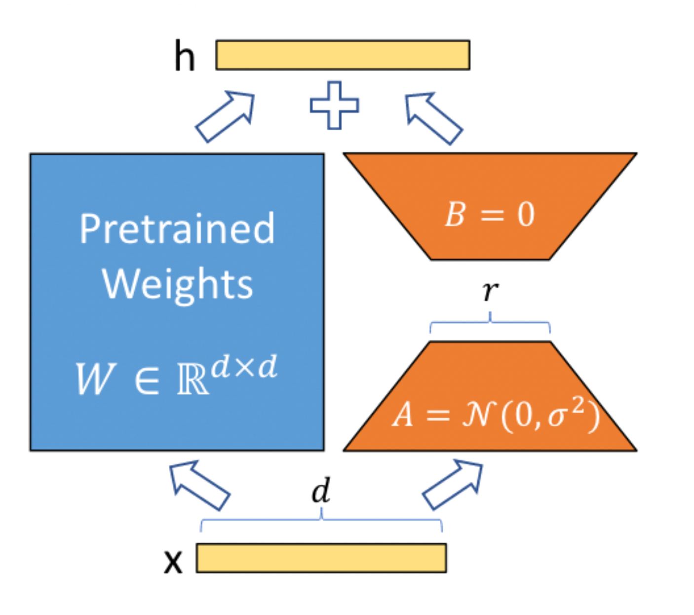

微调（Supervised Finetuning）¶
指令微调阶段使用了已标注数据。这个阶段训练的数据集数量不会像预训练阶段那么大，最多可以达到几千万条，最少可以达到几百条到几千条。指令微调可以将预训练的知识“涌现”出来，进行其他类型的任务，如问答类型的任务。一般指令微调阶段对于在具体行业上的应用是必要的，但指令微调阶段一般不用于灌注大量新知识，而是将已有知识的能力以某类任务的形式展现出来。
指令微调任务有多种场景，比较常用的有：
- 风格化：特定的问答范式
- 自我认知：自我认知改变
- 能力增强：模型本身能力不够，对具体行业的数据理解不良
- Agent：支持Agent能力，比如程序编写、API调用等
上述只是举了几个例子，一般来说距离用户最近的训练方式就是指令微调。
一般来说，LLM中指的base模型是指经过了预训练（以及进行了一部分通用指令的微调）的模型。Chat模型是经过了大量通用数据微调和人类对齐训练的模型。
如何选择base模型和chat模型进行微调呢？
- 数据量较少的时候（比如小于1w条）建议使用chat模型微调
- 数据量较多、数据较为全面的时候，建议使用base模型微调
当然，如果硬件允许，建议两个模型都进行尝试，选择效果较好的。需要注意的是，chat模型有其独特的输入格式，在微调时一定要遵循。base模型的输入格式一般比较简单（但也需要遵守该格式），而且一般该格式不支持多轮数据集。
如果需要用base模型训练多轮对话，一般需要使用一个支持多轮对话的template。在SWIFT中，可以指定为
default，在训练时只需要指定--template_type default即可。
重要概念¶
- loss 代表模型求解的y和实际的y值的差异。该值会进行loss.backward()，这个方法会求解梯度，并将对应梯度值记录在每个参数上
loss可以理解为根据模型计算出来的值和正确值的偏差（也就是残差）。 例如，回归任务中计算的值是1.0，而实际的值应当为2.0，那么loss为2.0-1.0=1.0。上述loss类型为MAE，除此外，还有MSE，Hinge等各类loss。一般分类任务的loss为交叉熵（Cross-Entropy），这也是目前LLM最常用的loss。
loss计算出来后（这个过程也就是forward，即前向推理），经过backward过程即可计算出梯度。
梯度：光滑的曲面上导数变化最大的方向
loss可以经过PyTorch的loss.backward()将每个算子、每个步骤的梯度都计算出来（复杂微分方程的链式求导过程），当有了梯度后，可以将参数往负梯度方向更新，学习率（lr）就是这时候起作用的，由于直接加上负梯度太大，可能直接产生震荡，即值从一个点瞬间跑到了曲线上的另一个点，导致在这两点反复震荡不收敛，因此乘以一个lr，让loss一点点下降。
-
epoch 代表对数据集训练多少轮次
-
iter 对输入数据的每次forward+backward代表一个iter
-
batch_size 批处理大小。在一次前向推理中，同时处理多少行数据。由于同一批数据会并行求解梯度，因此batch_size越大，梯度越稳定。在SFT时较为合适的梯度一般选择为16/32/64等值
-
batch_size越大，并行计算消耗的显存越高。因此在低显存情况下，可以选用batch_size=1，gradient_accumulation_steps=16。训练会在iter%gradient_accumulation_steps==0时集中进行一次参数更新。在iter%gradient_accumulation_steps!=0时，会将梯度值不断累加到参数上，这样就相当于将batch_size扩大了gradient_accumulation_steps倍
-
learning_rate 学习率 训练将负梯度值乘以该值加到原参数上。换句话说，每次只将参数更新一个小幅度，避免向错误的更新方向移动太多。
一般LoRA的学习率可以比全参数训练的学习率稍高一点，因为全参数训练会完全重置所有参数，训练时需要学习率更低。 LLM训练的学习率一般设置在1e-4~1e-5不等
- max_length 输入句子的最大长度。比如设置为4096，那么句子加答案转换为token后最大长度为max_length。这个值会影响显存占用，需要按照自己的实际需求设置。
-
当batch_size大于1时，意味着不同句子的长度可能不同。data_collator的作用就是按照固定max_length或者batch中的最大长度对其他句子的token进行补齐。补齐的部分不参与模型的loss计算，但仍然会占用计算量
-
flash_attention flash attention是一种针对attention结构高效计算的组件，该组件主要原理利用了显卡的高速缓存。flash attention会节省约20%~40%训练显存并提高训练速度，对训练精度没有不良影响。在显卡支持的情况下建议开启。
-
optimizer
optimizer是深度学习中的优化器，负责将负梯度值累加到原来需要更新的参数上，类似于：
Vanilla SGD
weights = weights - learning_rate * grad
实际的原理会比较复杂，比如常用的AdamW实际上是一个复杂的滑动平均的算法。
- lr_scheduler
一般来说，训练各个阶段的学习率是不一样的，有时候需要越来越小（因为训练到最后需要更精细的调节），有时候需要先有个warmup（先将lr从0增大到指定值，再慢慢减小），lr_scheduler就是用来动态调整lr使用的组件。
- gradient_checkpointing 梯度检查点。该方法的原理是将训练时的中间变量在前向过程中暂时丢弃，并在后向过程中重新计算。该方法可以有效节省训练显存，但属于时间换空间的做法，因此训练时间会变长。对显存的节省可以达到30%-70%不等。训练速度会减慢20%-40%不等。
训练有很多超参数，它们的含义和设置技巧可以参考这里。
分布式训练（Distributed Training）¶
由于较大模型可能在单张显卡上显存溢出，或者训练速度不够，因此单机多卡或多机多卡训练是必要的。在训练过程中的分布式训练有以下几种模式：
-
DDP 分布式数据并行。将训练集的数据分段拆分到不同的进程中，这种训练方式相当于增加了batch_size。比如四个进程，每个进程batch_size=1，则总体batch_size=4。在计算梯度时，torch框架会自动将四个进程的梯度进行累加平均。该方法会提高训练速度，但如果模型在单张显卡上显存溢出，DDP方式也无法运行。
-
MP 模型并行。模型并行分为多种方式，如tensor并行、device_map、流水线并行、FSDP等。
-
tensor并行：将矩阵拆分到多张显卡上，比如，将一个2048x2048的矩阵，拆分为两个1024x2048的矩阵，在前向推理时在显卡间通讯，完成一次推理，这样一个模型的显存需求就被平均拆分到两个显卡上。tensor并行最知名的框架是Megatron。
-
device_map并行：自动计算如何将模型拆分到多个显卡上。比如一个模型按照顺序分为embedder、layer095、output，device_map可能将这些参数均分到两张显卡上，比如embedder、layer048分配到显卡1上，layer49~95、output分配到显卡2上。相比Megatron，device_map方式较为低效，因为使用该方法训练或推理时，显卡1计算时显卡2是空闲的，计算效率较低；而Megatron是同时使用两个显卡计算，效率较高
-
流水线并行：类似于device_map，将模型按照layer拆分到不同显卡上
-
FSDP，在讲FSDPqian需要先讲解DeepSpeed的ZeRO优化方式
-
ZeRO-1：类似DDP，但是将Optimizer的state均分维护到不同的进程中，每次更新参数后对所有进程的参数进行同步更新
-
ZeRO-2：在ZeRO-1的基础上，将不同层的梯度值均分维护到不同的进程中，每次每个进程同步梯度后更新自己负责的梯度对应的参数部分，并在更新后对所有的进程的参数进行同步
-
ZeRO-3：在ZeRO-2的基础上，将不同层的模型参数也均分到不同的进程中。每个进程在计算某层结果时，从其他进程中获得对应的层的参数，计算完后抛弃该层参数；backward时，也从其他进程获得对应层的参数并同步梯度信息，计算完后抛弃该层参数。这样每个进程就在仅保存某些层的参数的条件下完成了数据并行计算
-
FSDP就是ZeRO-3的并行策略
-
LoRA¶
LoRA是一个非常重要的可调优结构，简单来说，就是增加了一个额外可训练部分，比如原来的Linear的矩阵是MxN维，增加一个LoRA，该LoRA会包含两个参数量较少的矩阵：Mxd, dxN，这两个矩阵相乘后仍然是MxN维的，训练时原MxN矩阵冻结，只训练LoRA的两个矩阵，参数量就会大大减少。

为什么模型本身的矩阵不使用这种形式？
一般大规模矩阵的非零特征值数量会远远小于矩阵的维度，这个非零特征值的数量叫做矩阵的秩（rank），秩决定了这个矩阵如何影响被乘的向量，为0或较小的特征值对传入tensor的影响也比较小，丢弃这些信息对精度的影响不大。
一个模型包含了多个大矩阵，这些大矩阵的秩不相等而且难以预测，因此不能对原模型应用LoRA，但在sft时使用LoRA相对安全，虽然有精度损失，但可以使一个大模型在一个消费级显卡上进行训练。
也就是说，LoRA的原理是假设所有矩阵的秩都是d，进行了一定的有损压缩。基于LoRA也有很多升级版技术，如AdaLoRA、SoRA等，这些组件方案都是基于LoRA，对不同算子的LoRA的rank进行动态调节以达到更好的效果。
LoRA目前已经是训练SD模型和LLM模型的最常用技术。LoRA的weights也非常小，只有几十兆，因此加载和使用都非常方便，且LoRA本身可以合并回原模型，推理时可以做到兼容原模型结构。
如果涉及到对模型的知识编辑，比如自我认知任务，LoRA的目标module一般需要设置为
ALL，因为MLP层对模型的知识获取是至关重要的，需要参与训练过程。
训练过程¶
在前序的文章中，我们讲述了如何进行数据的前处理。结合上面讲解的基本概念，我们就可以运行一个完整的训练过程。
安装好SWIFT后，可以直接启动界面运行训练和推理：
在框架中，一个最小的训练过程代码如下：
自定义一个训练过程¶
上面我们构建了一个最小的训练和推理流程。大多数时候开发者需要自定义一个训练流程和对应的数据集。在这种情况可以参考下面的步骤：
- 选择一个启动训练的方式，界面方式可以使用上述的web-ui命令（swift web-ui），命令行方式可以参考：
注意命令行具有很多可调节参数，可以查看文档来查看这些参数的具体意义。
如果想要了解训练流程可以查看训练代码
了解超参数的拼接和处理可以查看超参数的处理代码
了解所有支持的模板可以查看模板的拼接